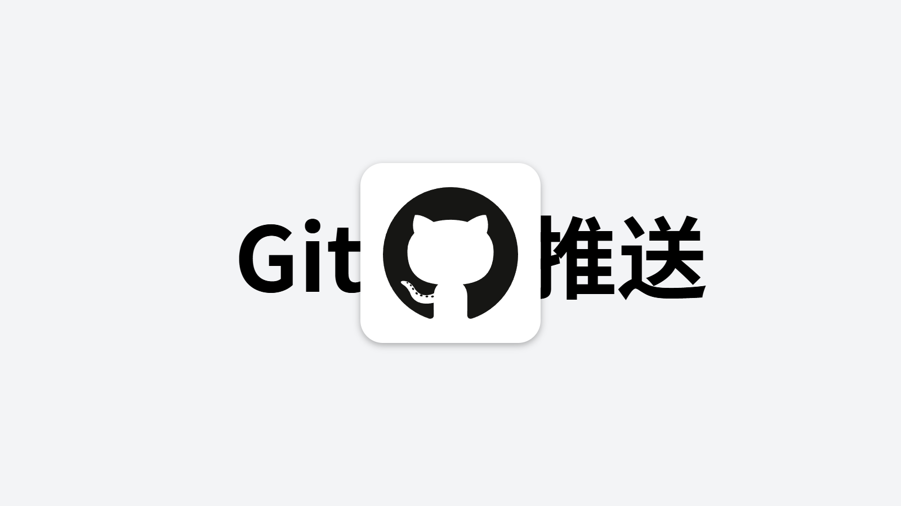

Git 安装与推送到 GitHub

Git 是目前世界上最流行的分布式版本控制系统，由 Linux 之父 Linus Torvalds 于 2005 年创建。无论你是个人开发者还是团队协作，Git 都是不可或缺的工具。本文将带你从零开始，完成 Git 的安装、配置，并将本地仓库推送到 GitHub 远程仓库。
安装 Git
Git 支持所有主流操作系统，下面分别介绍在不同平台上的安装方法。
Windows 平台
前往 Git 官方网站下载最新版本的安装包，双击运行即可完成安装。安装过程中建议保持默认选项。
# 下载地址
https://git-scm.com/download/win
# 安装完成后打开终端验证
git --version
# 输出示例：git version 2.45.0.windows.1macOS 平台
macOS 用户可以通过 Homebrew 包管理器快速安装 Git：
# 使用 Homebrew 安装
brew install git
# 验证安装
git --version也可以通过安装 Xcode Command Line Tools 来获取 Git：
xcode-select --installLinux 平台
大多数 Linux 发行版已经预装了 Git。如果没有，可以使用包管理器安装：
# Ubuntu / Debian
sudo apt-get update
sudo apt-get install git
# CentOS / RHEL / Fedora
sudo yum install git
# Arch Linux
sudo pacman -S git配置 Git
安装完成后，第一步是配置你的用户名和邮箱地址。这些信息会记录在每一次提交中，方便团队协作时识别作者。
# 设置全局用户名和邮箱
git config --global user.name "你的用户名"
git config --global user.email "你的邮箱@example.com"
# 查看当前配置
git config --list
# 设置默认分支名称为 main
git config --global init.defaultBranch main
# 设置默认编辑器（可选）
git config --global core.editor "code --wait"提示：使用 --global 参数表示全局配置，对所有仓库生效。如果只想对某个仓库单独配置，去掉 --global 即可。
创建仓库并推送到 GitHub
下面是完整的仓库创建和推送流程，从零开始一步步操作：
Step 1：在 GitHub 上创建远程仓库
- 登录 GitHub 账号
- 点击右上角的 + 号，选择 New repository
- 填写仓库名称（例如
my-project） - 选择 Public 或 Private
- 勾选 Add a README file（可选）
- 点击 Create repository
Step 2：本地初始化仓库
# 1. 创建项目目录
mkdir my-project
cd my-project
# 2. 初始化 Git 仓库
git init
# 输出：Initialized empty Git repository in /path/to/my-project/.git/
# 3. 创建 README 文件
echo "# My Project" > README.md
# 4. 添加所有文件到暂存区
git add .
# 5. 提交更改
git commit -m "feat: initial commit"Step 3：关联远程仓库并推送
# 1. 添加远程仓库地址
git remote add origin https://github.com/username/my-project.git
# 2. 验证远程仓库
git remote -v
# 3. 推送到 GitHub（首次推送使用 -u 参数）
git push -u origin main
# 之后推送只需
git push提示：如果你在创建 GitHub 仓库时勾选了 README 等文件，需要先执行 git pull origin main --allow-unrelated-histories 合并远程历史，然后再推送。
配置 SSH 密钥（推荐）
使用 HTTPS 方式推送每次都需要输入密码，而 SSH 密钥可以实现免密推送，更加方便安全。
# 1. 生成 SSH 密钥
ssh-keygen -t ed25519 -C "你的邮箱@example.com"
# 一路回车使用默认设置即可
# 2. 查看公钥内容
cat ~/.ssh/id_ed25519.pub
# 3. 将公钥添加到 GitHub
# 进入 GitHub -> Settings -> SSH and GPG keys -> New SSH key
# 粘贴公钥内容并保存
# 4. 测试连接
ssh -T git@github.com
# 输出：Hi username! You've successfully authenticated...
# 5. 使用 SSH 地址替代 HTTPS 地址
git remote set-url origin git@github.com:username/my-project.git常用命令速查表
以下是一些日常开发中最常用的 Git 命令，建议收藏备用：
| 命令 | 说明 |
|---|---|
git init | 初始化新仓库 |
git clone <url> | 克隆远程仓库到本地 |
git status | 查看工作区状态 |
git add . | 添加所有文件到暂存区 |
git commit -m "msg" | 提交更改到本地仓库 |
git push | 推送到远程仓库 |
git pull | 拉取并合并远程更新 |
git branch | 查看所有分支 |
git checkout -b <name> | 创建并切换到新分支 |
git merge <name> | 合并指定分支到当前分支 |
git log --oneline | 查看简洁提交历史 |
git stash | 暂存当前修改 |
.gitignore 文件
.gitignore 文件用于指定哪些文件或目录不需要被 Git 跟踪。以下是一个常见的前端项目 .gitignore 示例：
# 依赖目录
node_modules/
.pnpm-store/
# 构建输出
dist/
build/
.next/
# 环境变量文件
.env
.env.local
.env.*.local
# 编辑器配置
.vscode/
.idea/
*.swp
*.swo
# 系统文件
.DS_Store
Thumbs.db
# 日志文件
*.log
npm-debug.log*注意事项
重要提醒
- 切勿提交敏感信息：密码、API 密钥、Token 等绝不能提交到仓库，使用环境变量文件管理
- 定期提交代码：保持提交历史清晰，每次提交只做一件事
- 写好 commit 信息：建议遵循约定式提交（Conventional Commits）规范，如
feat:、fix:、docs:等 - 推送前先拉取：执行
git pull获取最新代码，避免产生冲突 - 善用分支：新功能或修复 Bug 时创建新分支，完成后再合并到主分支
- 使用 SSH 密钥：比 HTTPS 更安全便捷，配置一次终身受益
总结
到这里，你已经学会了 Git 的完整安装和配置流程，以及如何创建本地仓库并推送到 GitHub。掌握这些基础操作后，你可以进一步学习分支管理、变基（rebase）、标签（tag）等高级功能。Git 的学习曲线虽然有些陡峭，但一旦掌握，它将成为你开发工作中最得力的助手。
如果你在操作过程中遇到任何问题，欢迎在评论区留言讨论，或者查阅 Git 官方文档 获取更多帮助。